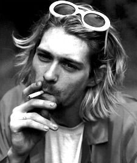

Experience

Grohl stated that Cobain believed that music comes first and lyrics second. Cobain focused, foremost, on the melodies of his songs. Cobain complained when fans and rock journalists attempted to decipher his singing and extract meaning from his lyrics, writing: "Why in the hell do journalists insist on coming up with a second-rate Freudian evaluation of my lyrics, when 90 percent of the time they've transcribed them incorrectly?". While Cobain would insist on the subjectivity and unimportance of his lyrics, he was known to labor and procrastinate in writing them, often changing the content and order of lyrics during performances. Cobain would describe his lyrics himself as "a big pile of contradictions. They're split down the middle between very sincere opinions that I have and sarcastic opinions and feelings that I have and sarcastic and hopeful, humorous rebuttals toward cliché bohemian ideals that have been exhausted for years".